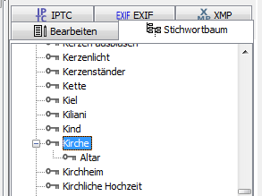

Haben Sie viele Stichwörter im Stichwortbaum, kann es zeitaufwändig sein, diese hierarchisch zu sortieren.
Öffnen Sie im Menü Fenster den Dialog Eingabehilfen (F9) und wählen dort den Kartenreiter Stichwortbaum aus.
Im Programmfenster rechts wählen Sie den Kartenreiter Stichwortbaum aus.
Ziehen Sie den Eingabehilfen-Dialog auf passende Größe und schieben diesen neben den rechten Stichwortbaum.
Nun können Sie beide Stichwortbäume auf verschiedene Stichwort-Positionen einstellen und Stichwörter von einem Baum in den anderen ziehen mit der Maus.
Wollen Sie unter Zoo einen Aal und eine
Barbe einfügen, stellen Sie einen Baum auf
Zoo ein, den anderen auf Aal, wählen
Aal und Barbe aus, ziehen diese aus ihren
Baum in den anderen und lassen beide auf Zoo fallen.
In der Abbildung unten werden so 2700 SPI und
4800 SPI unter Scanner eingeordnet.
